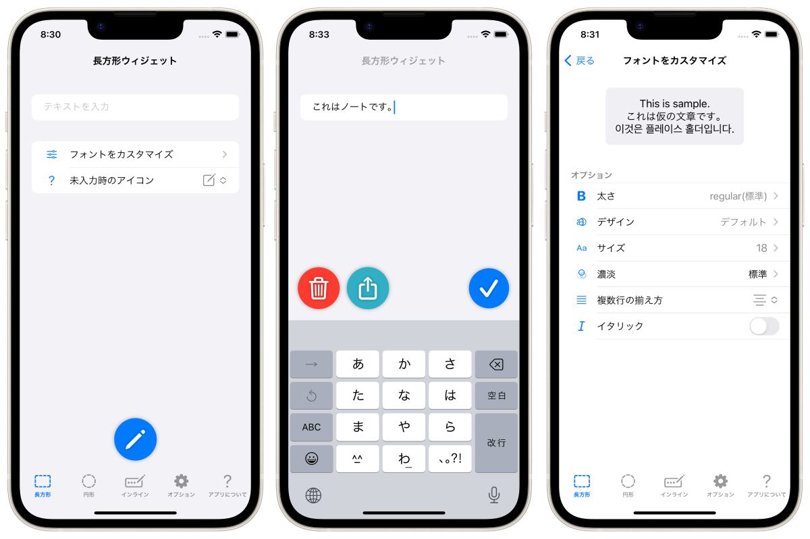
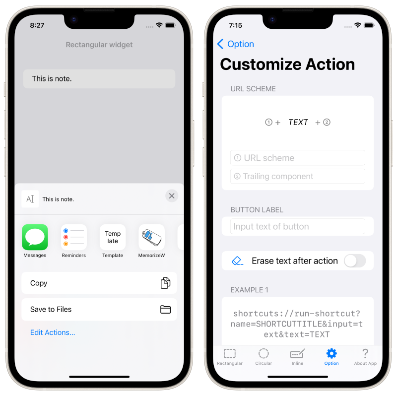

Aplicação para computador portátil dedicada à nova funcionalidade Widget do ecrã bloqueado do iOS 16, lançada no outono de 2022!


Esta é uma aplicação de bloco de notas dedicada ao widget do ecrã de bloqueio - uma aplicação para iPhone/Apple Watch.
Quando quiser tomar uma nota, pode escrever rapidamente uma nota no ecrã de bloqueio e verificar a nota no ecrã de bloqueio a qualquer momento!
Funciona com o Apple Watch.
O design da nota no ecrã de bloqueio pode ser personalizado de forma flexível, para que possa utilizá-lo de acordo com as várias finalidades de "deixar notas" e "apresentar texto no ecrã de bloqueio".
Tocar no widget abre imediatamente o teclado para editar a nota.




O iPhone 14 Pro com Always On Display transforma o iPhone no seu bloco de notas mais próximo.
Citação: https://www.apple.com/jp/iphone-14-pro/
Gratuito
Ocultar anúncios (160 ienes)